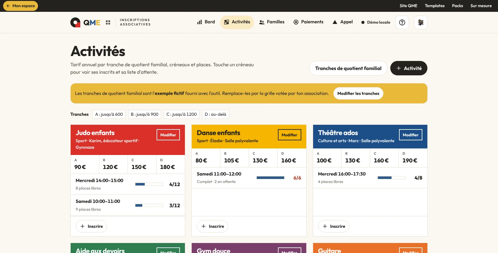
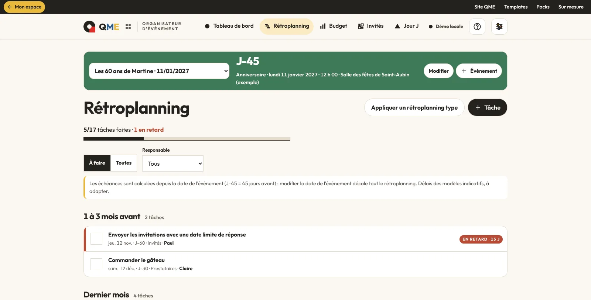
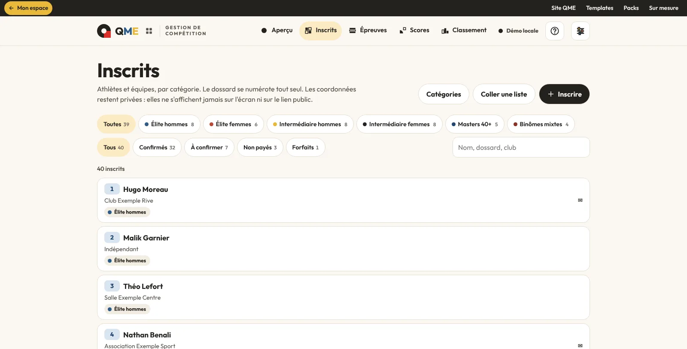
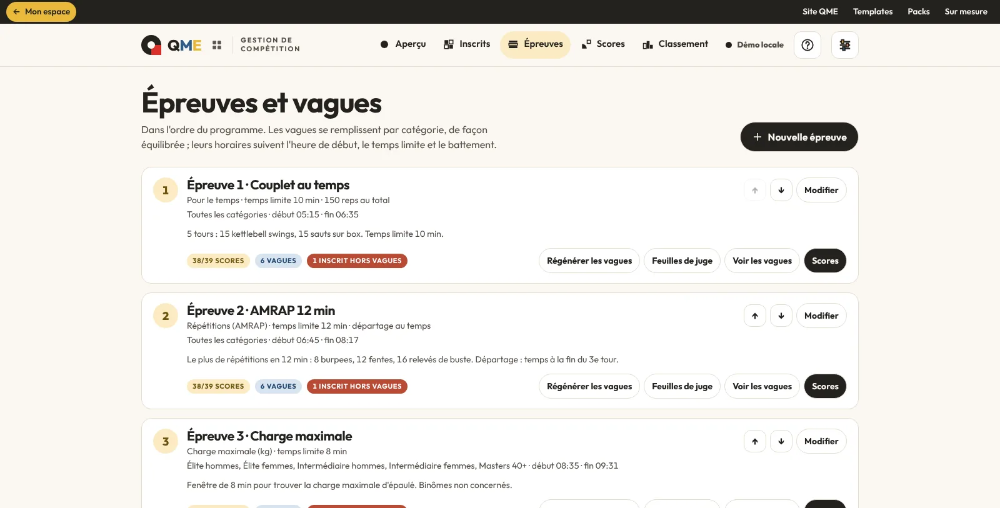
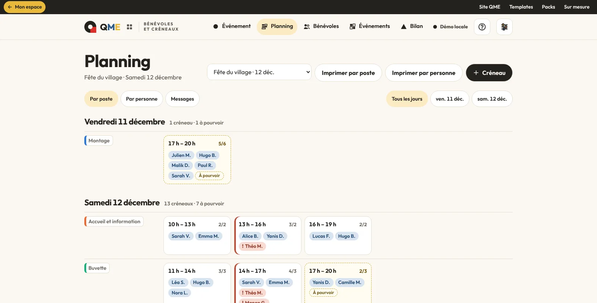
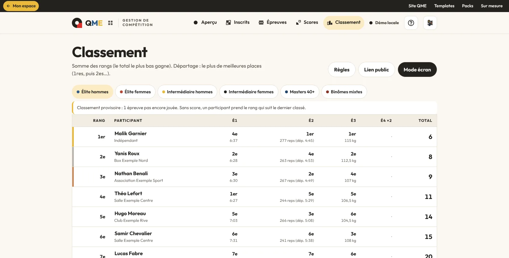
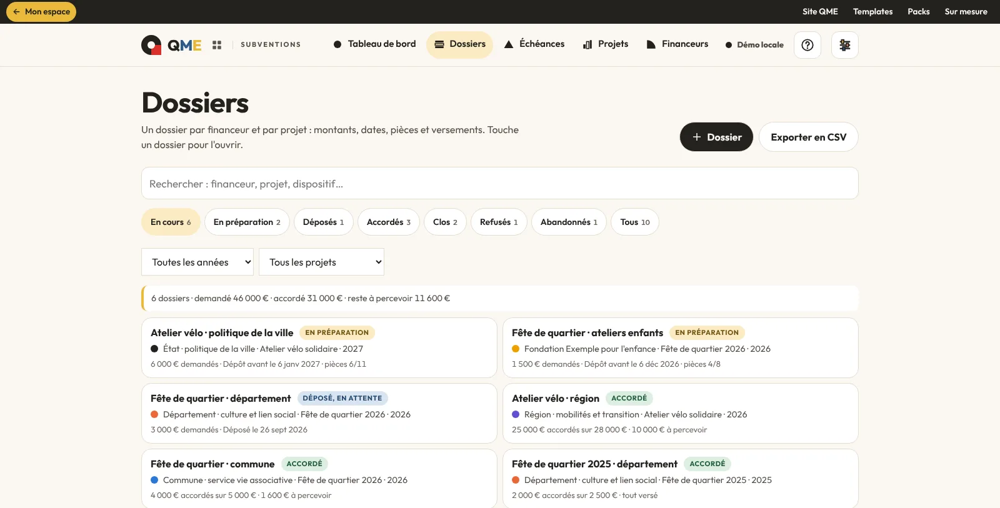
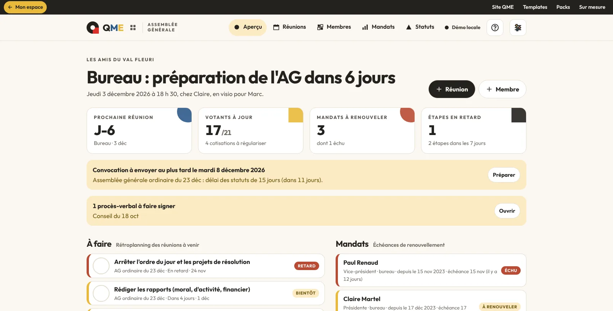
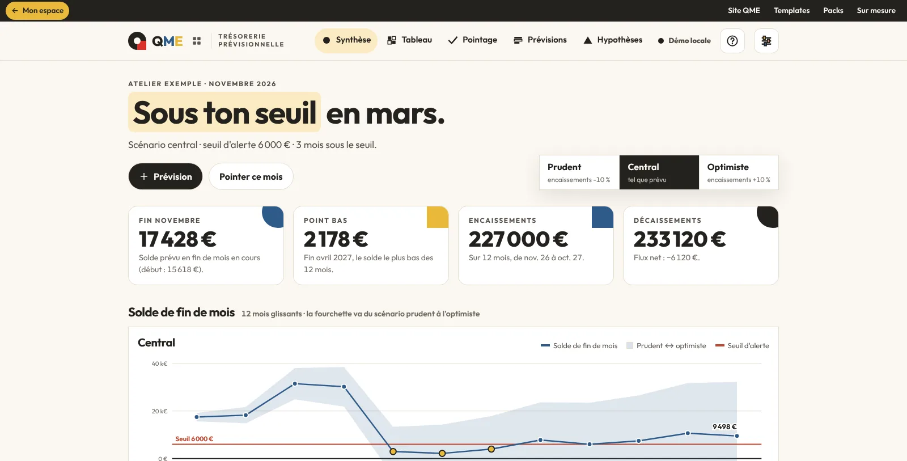

Concept pour les clubs et associations sportives qui organisent une compétition · pack prêt à l'emploi
De l'inscription des adhérents au podium, une saison tenue.
Judo, gymnastique, escalade, trail, triathlon, natation : un club qui organise sa compétition annuelle gère en réalité toute une saison. Les inscriptions de la rentrée, la préparation de l'épreuve, les inscrits et leurs dossards, les vagues, le classement que tout le monde attend, les bénévoles du jour J, le dossier de subvention, l'assemblée générale et la caisse du club. Sept outils en ligne, déjà prêts, réunis dans un pack et adaptables sur mesure.
Chaque démo ouvre une association fictive, sans inscription. Elle reste dans votre navigateur et n'envoie rien. Toutes les données affichées sur cette page sont fictives.
Le quotidien
Un tableur pour les adhérents, un autre pour les inscrits de la compétition, les vagues sur un tableau blanc, les bénévoles dans une conversation de groupe, le dossier de subvention dans un classeur.
Ce que cela coûte
Des soirées de bénévoles à recopier des listes, un classement attendu pendant que les juges additionnent, un poste vide à la buvette, une échéance de subvention ratée, une AG préparée la veille.
Ce que fait le pack
Chaque étape de la saison a son outil : les calculs (places, horaires, classement, quorum, solde) sont faits pour vous, et le bureau partage la même clé.
01 · Rentrée
Les adhérents inscrits, les créneaux remplis
Septembre : chaque activité avec ses créneaux, sa capacité et sa liste d'attente, chaque famille avec ce qu'elle a payé et ce qu'elle doit encore.
- Places prises sur capacité, liste d'attente par créneau
- Tarifs par tranche, paiement en plusieurs fois, impayés en retard
- Listes d'appel prêtes pour les entraîneurs

02 · Préparation
La compétition préparée à rebours
Salle, arbitres, récompenses, buvette, communication : chaque tâche datée depuis le jour de la compétition, avec son responsable, et le budget prévu, engagé et payé.
- Échéances calculées depuis la date : changer la date décale tout
- Tâches en retard signalées, responsable par tâche
- Budget, prestataires et acomptes suivis au même endroit

03 · Inscriptions
Les inscrits et leurs dossards
Athlètes ou équipes, catégorie, club, statut inscrit, confirmé ou forfait, paiement et pièces vérifiées. Une liste collée depuis un formulaire suffit à tout importer.
- Dossard attribué automatiquement
- Filtres par catégorie et par statut, recherche
- Export CSV, avec ou sans coordonnées

04 · Programme
Les vagues et leurs horaires calculés
Chaque épreuve dans l'ordre du programme, les vagues générées par catégorie selon le nombre de couloirs, et l'horaire de chaque vague calculé.
- Vagues équilibrées, ordre par dossard, tirage ou classement inversé
- Repos insuffisant entre deux vagues signalé
- Feuilles de juge imprimables, une vague par page

05 · Jour J
Les bénévoles à leur poste, sans trou ni doublon
Accueil, buvette, chronométrage, montage : qui tient quel poste à quelle heure, et ce qui reste à pourvoir, bien avant le matin de la compétition.
- Créneaux à pourvoir visibles d'un coup d'œil
- La même personne à deux endroits en même temps : signalée
- Planning imprimable par poste ou par personne

06 · Résultats
Le classement en direct, affiché au bord du plateau
Les scores saisis au téléphone par les juges, le classement recalculé à chaque saisie, et l'affichage sur grand écran ou sur le téléphone des spectateurs.
- Classement par catégorie, aux règles que vous choisissez
- Mode écran et lien spectateurs en lecture seule
- Aucune coordonnée publiée

07 · Financement
Le dossier de subvention déposé à temps
Un dossier par financeur (commune, département, région, fondation, mécène), les pièces à joindre cochées, une alerte avant chaque échéance et le bilan préparé pendant la saison.
- Montants demandés, accordés et reste à percevoir
- Échéances de dépôt et de bilan rappelées
- Justificatifs rangés au fil de l'eau

08 · Fin de saison
L'assemblée générale en règle
Le rétroplanning daté depuis le délai de convocation de vos statuts, la convocation prête, la feuille de présence et les pouvoirs, le quorum et les votes calculés, puis le procès-verbal.
- Délais, quorum et majorités saisis d'après vos statuts
- Mandats du bureau suivis jusqu'au renouvellement
- Procès-verbal imprimable

09 · Trésorerie
La caisse du club, douze mois devant vous
Cotisations, engagements, buvette et subventions d'un côté ; salle, arbitrage, récompenses et licences de l'autre : le solde de chaque fin de mois, avant que le creux n'arrive.
- Seuil d'alerte et mois sous le seuil signalés
- Scénarios prudent, central et optimiste
- Pointage du réalisé et export CSV

Prêt à l'emploi, ou sur mesure
Les sept outils sont prêts : ils s'ouvrent en ligne, sur ordinateur, tablette ou téléphone, avec une seule clé partagée entre les membres du bureau, et vos données sont synchronisées. Si votre club demande autre chose, je le construis pour vous.
Le pack Associations et clubs
156 € au lieu de 209 €, achat unique, sans abonnement ni renouvellement
- Inscriptions associatives29 €
- Organisateur d'événement39 €
- Trésorerie prévisionnelle29 €
- Gestion de compétition sportive49 €
- Subventions25 €
- Bénévoles et planning des créneaux19 €
- Assemblée générale19 €
Chaque outil s'achète aussi seul et s'essaie 14 jours gratuitement, sans carte bancaire.
La version sur mesure
Adaptée à votre club et à votre discipline
- Votre barème et vos règles de classement, vos catégories d'âge ou de poids
- Les inscriptions ouvertes en ligne aux participants extérieurs
- Vos documents : licences vérifiées, attestations, résultats à publier
La gestion de compétition est un outil d'organisation, pas un logiciel fédéral homologué : les règles de classement sont celles que vous choisissez. Les délais, quorums et majorités de l'assemblée générale se saisissent d'après vos statuts. L'exemple du rétroplanning est un événement de la démo : vous y créez votre compétition. Les données de la démo sont fictives et ne quittent pas votre navigateur.
Trente minutes pour voir ce qui ferait gagner le plus de temps au bureau
Ouvrez la démo, puis dites-moi comment votre club organise sa compétition aujourd'hui : je vous dis franchement si le pack prêt à l'emploi suffit, ou ce qu'une version sur mesure changerait.